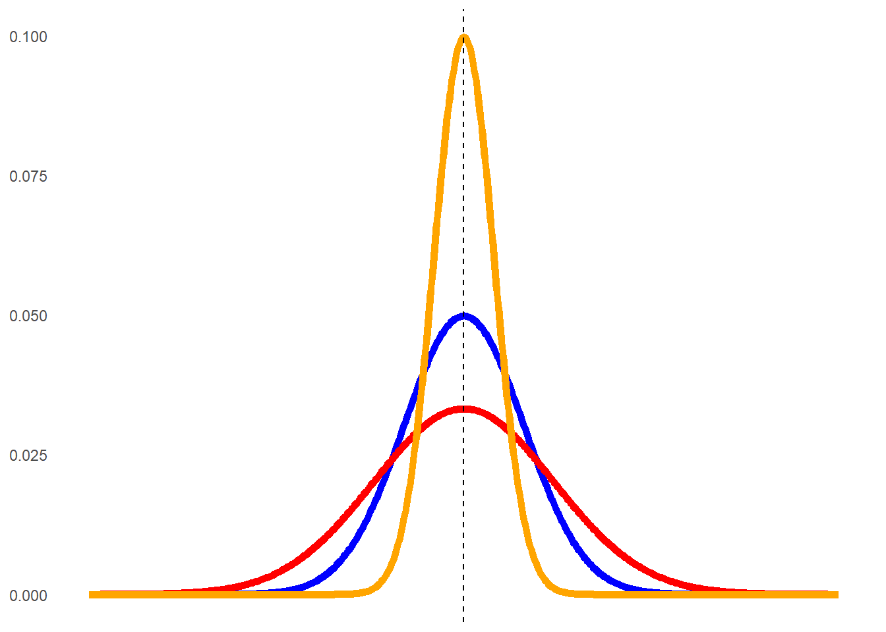
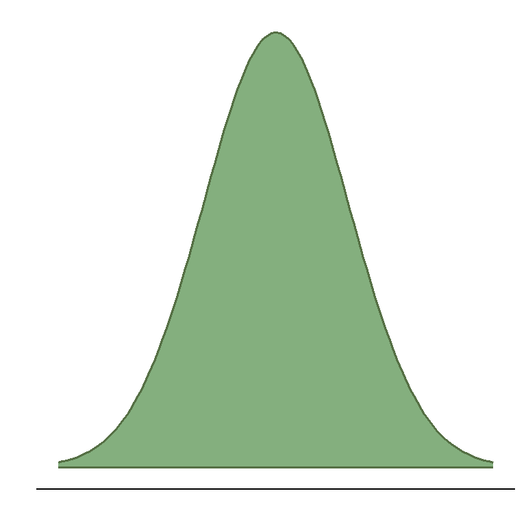
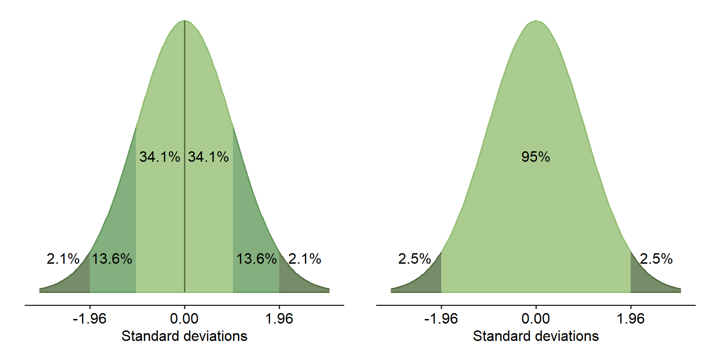
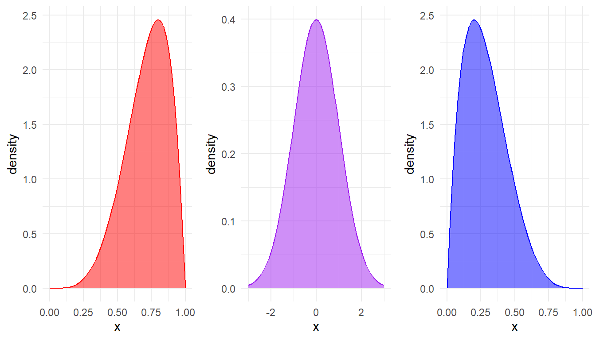
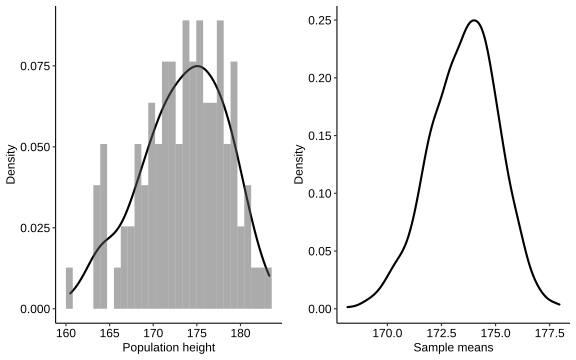
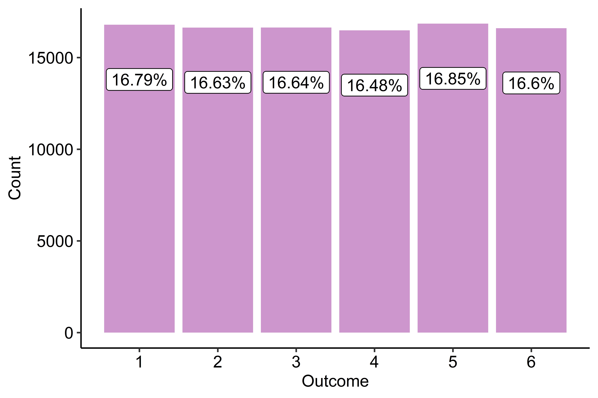
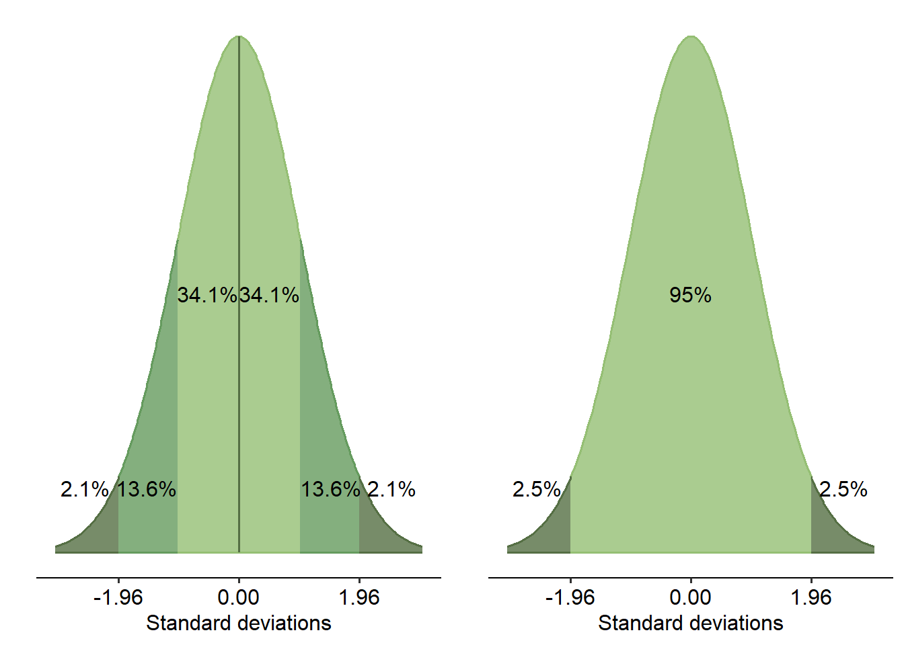
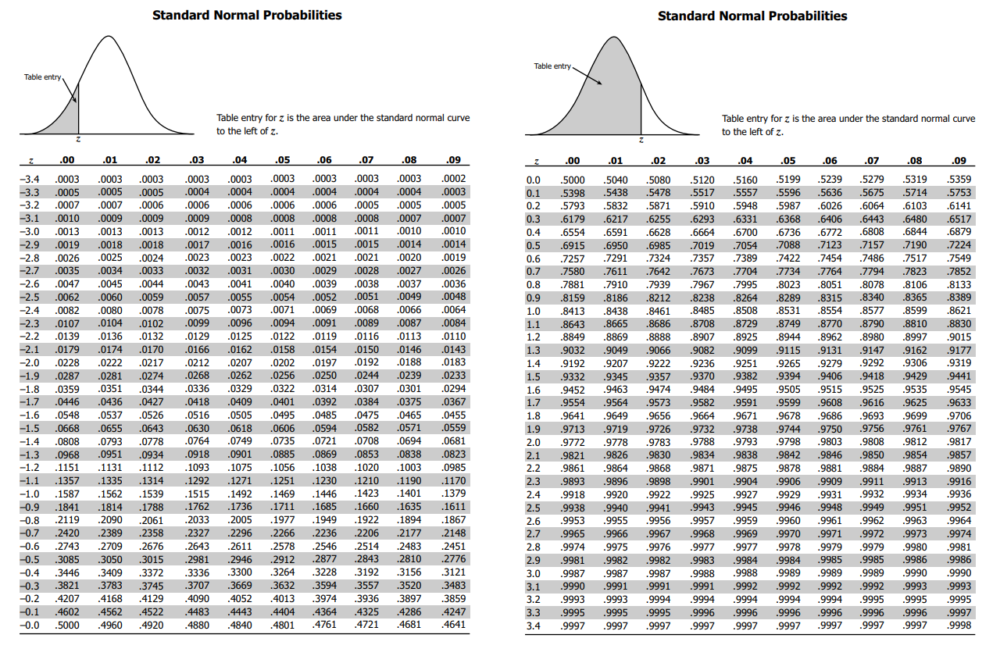
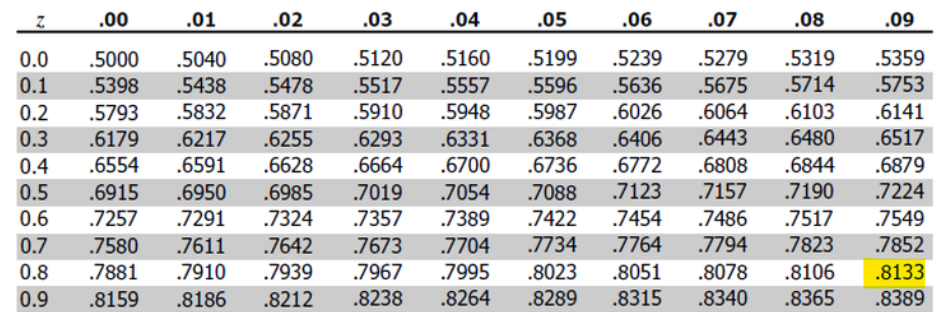

2 Descriptive statistics
Descriptive statistics, as the name implies, are used to describe data. A key part of the quantitative research process is understanding the various ins and outs of your data. You’ll probably have a sense of why this is important if you have the qualitative presentation still fresh in your mind - namely, knowing your data is also really important for knowing what to do with it.
In this first module, we will start with the first steps of understanding quantitative data. This involves visualising our data to see what it looks like, and describing key features of the data. If you’re familiar with statistics then some of this may seem a bit trivial, but it’s important that we get the basics right before we go on to doing fancy statistical tests.
Also, I know that the idea of doing statistics and maths freaks a lot of us out - and that’s totally normal. Yes, there will be some number-crunching and maths in the next series of modules, but the focus of these modules is not to force you to calculate things by hand. You will encounter a whole bunch of mathematical formulae, but the point of doing so is to illustrate the concepts that underpin them. These concepts are crucial to understanding the ‘magic’ that happens with quantitative analysis, and a really solid foundation in statistical concepts will go a long way.
That being said, throughout these statistics modules there will be a number of activities that ask you to actively work with sample datasets and analyse them. We promise that you will get so much more out of these modules if you complete these activities, because readings and webpages aren’t the best substitute for actually doing it and getting your hands dirty with data.
By the end of this module you should be able to:
- Create both appropriate and meaningful graphs from data
- Calculate various forms of descriptive statistics
- Interpret both graphs and descriptive statistics, and explain what they tell you

2.1 Visualising data
When you have data in your hand, it is often tempting to dive straight into plugging it into an analysis and seeing what the results are. However, in general this is unwise. The first step in working with quantitative data is to see what your data looks like. Looking at the data can give us a first glance into many aspects of the results, which can be informative for analyses.
2.1.1 Why visualise data?
“The greatest value of a picture is when it forces us to notice what we never expected to see.” -John W. Tukey
One of the first steps in working with quantitative data is data visualisation, which is the process of graphing it and looking at it. If you work with quantitative data then it should become standard practice for you to graph your data: specifically, after you’ve defined your research questions and methods of analysis, but before you actually analyse it.
It’s common for many students learning research methods and statistics to simply take a ‘cookie cutter’ approach - that is, collect data, run basic tests on it and call it a day. Sadly this is common even at our level, and you will almost certainly see this happen at music psychology conferences that you go to in future. People will present complex analyses that sound impressive - until you pick up on small cues that suggest they don’t really understand their data at all.
Below is an example of why data visualisation should be a crucial part of the quantitative research process:
!(img/datasaurus.gif)
This series of datasets is called the Datasaurus Dozen, which are 12 datasets that look entirely different (including the dinosaur!) but share almost identical summary statistics, as shown by the bold numbers on the right.1
Data visualisation is important because:
- It lets you observe patterns in your data.
- It can reveal unexpected structures in your data that would normally be missed otherwise.
- It is an effective way of communicating information. The best graphs tell a reader everything they need to know in one image.
In the Canvas version of this subject, there are some general guidelines as to how to make good figures right around this point. For this version of the book, the section on ggplot is going to be infinitely better.
Regardless of which graph you use, every good graph should have the basic following features:
Content made with H5P.
2.2 Counts and central tendencies
Once we understand what our data looks like, we can then move to describing the general properties of the data. Such general properties are called descriptive statistics. Reporting descriptive statistics is crucial for many aspects of quantitative research.
2.2.1 Basic features
There are a couple of basic features of any dataset that should be looked at and noted:
| Name (APA Symbol) | Definition | When to report? |
|---|---|---|
| Count (n) | The number of data points. | The number of participants should always be reported - not just for the sample as a whole, but for each analysis done. |
| Range | In the context of writing up statistics, this is usually the minimum and maximum values. | Reporting these values is often useful as a range when writing up demographic variables, e.g. age or years of training. |
| Percentages | Use primarily for categorical data, e.g. sex or groups. |
We can use R to find some of these values, either using straight base R or tidyverse functions. For this page/module only, I will use the variable_a mock variable from Section 2.2.2 with a minor amendment:
vector_a <- c(4, 1, 6, 2, 3, 4)
vector_a[1] 4 1 6 2 3 4For tidyverse usage, I’ll refer to df_a, which is just the same but as a one-column dataframe:
df_a column_a
1 4
2 1
3 6
4 2
5 3
6 4To find the count, or the number of items in a vector, we can use the length() function.
length(vector_a)[1] 6To find the minimum and maximum, we can use the min() and max() functions respectively. Specifying na.rm = TRUE will remove any missing data before calculation.
min(vector_a, na.rm = TRUE)[1] 1max(vector_a, na.rm = TRUE)[1] 6In tidyverse fashion, we can wrap this all in summarise() as follows:
df_a %>%
summarise(
n = n(),
min = min(column_a, na.rm = TRUE),
max = max(column_a, na.rm = TRUE)
) n min max
1 6 1 6Note here that rather than using length(), we use a function called n(). This function only works within summarise() and mutate(), but is essentially shorthand for length().
2.2.2 Central tendencies
While the range can be informative in some sitautions, it usually isn’t enough to draw deeper interpretations from raw data. One key way of describing data is in terms of central tendency - or where the ‘average’ value approximately is. There are three main types of central tendency, summarized in the table below.
| Name (APA Symbol) | Definition | When to use? | Things to note |
|---|---|---|---|
| Mean (M) | The sum of all values, divided by the number of data points. | Use if data is normally distributed. | Can be influenced by outliers, so generally unsuitable when data is skewed. |
| Median (Mdn) | The ‘middle’ data point, when sorted in order. | Use for skewed data, or for ordinal data. | Generally is less preferable to the mean, except for use in skewed/ordinal data. |
| Mode | The most frequent value. | Use for nominal data. | Unsuitable for most other types of data. |
To calculate a mean and median, use the mean() and median() functions respectively. Both functions also take the na.rm argument.
mean(vector_a, na.rm = TRUE)[1] 3.333333median(vector_a, na.rm = TRUE)[1] 3.5# Using summarise() and piping
df_a %>%
summarise(
mean = mean(column_a, na.rm = TRUE),
median = median(column_a, na.rm = TRUE)
) mean median
1 3.333333 3.5Interestingly, R doesn’t offer a base function to calculate a mode - if you need this information, you either need to manually work this out or turn to a package that offers it. One such example is the fantastic DescTools package, which provides a function called Mode():
DescTools::Mode(vector_a)[1] 4
attr(,"freq")
[1] 2The first number is the value of the mode, while the second number is the number of times the mode occurs (twice, in this case).
2.3 Variability
The other important part of describing data is in how spread out it is. Is our data tightly bunched together, or is it very spread out? This helps us understand where most of our data falls, as well as how it looks.
2.3.1 The variability of data
The other key way of describing data is in its spread, or distribution. The way data is distributed can give key insights into how that data should be treated.
Consider the following graphs below.

You can see that all three graphs peak at around the same point, but look very different outside of that. The orange line is narrow, while the red line is considerably more spread out. All of these graphs peak at the same point but still look very different. Therefore, they have very different spreads, or distributions.
We saw on the last page that we can quantify how far values are spread apart by finding the range. However, this isn’t always a good idea - two datasets with the exact same range can look wildly different. Therefore, we need ways of quantifying how data is spread out as well.
2.3.2 Percentiles, and the IQR
A basic way of describing variability in our dataset is by reporting percentiles or quantiles of the data. This is simply reporting what values fall within a certain percentage of the range of the data. For example, the 20th percentile captures all data that is in the bottom 20% of the sample.
Consider the following basic dataset:
dataset_a <- c(7, 10, 8, 1, 6, 5, 9, 3, 3, 4, 3, 0, 8, 8, 4, 9, 7, 1, 1, 5)
dataset_a [1] 7 10 8 1 6 5 9 3 3 4 3 0 8 8 4 9 7 1 1 5You can use the quantile() function to get R to calculate percentiles for you. quantile() needs the name of a vector as the first argument, and the desired percentile as a decimal for the prob argument (e.g. 20% = 0.2).
We can, for instance, make the following statements:
- The 25th percentile is the value 3 (count five values from the left - this is 25% of the data).
- The median is 5 (the middle 2 values are 5), which is also the 50th percentile
- The 90th percentile is 9.
quantile(dataset_a, prob = 0.25)25%
3 quantile(dataset_a, prob = 0.50) # You could also use median(dataset_a)50%
5 quantile(dataset_a, prob = 0.90)90%
9 quantile() can return multiple percentiles by giving a vector of decimals to the prob argument. For an IQR, we can tell R to calculate percentiles for the vector c(0.25, 0.75) - representing the 25th and 75th percentiles:
quantile(dataset_a, prob = c(0.25, 0.75))25% 75%
3 8 A specific form of this that can be quite useful is the interquartile range (IQR), which describes the middle 50% of the data (i.e. 25% either side of the median). It is a single value that represents the 75th percentile score minus the 25th percentile score.
If a dataset is heavily skewed, for instance, reporting the median with the IQR can be a useful way of more accurately capturing the basic features of the data. In this instance, the IQR would be 8 - 3 = 5. You can use the IQR() function to calculate this too (note the na.rm = TRUE)).
IQR(dataset_a, na.rm = TRUE)[1] 52.3.3 Standard deviation
Standard deviation (\(\sigma\), or SD) describes how spread out our data is within our sample, in standard (i.e. comparable) units. Data that is spread out widely (like the red curve above) will have a large standard deviation; likewise, data that has a narrow spread will have a small standard deviation. We’ll touch on this a bit more in the following pages, but for now just remember what a standard deviation is for.
To calculate standard deviation, we first calculate variance, which is another measure of spread:
\[ Variance = \frac{\Sigma (x_i - \bar{x} )^2}{n - 1} \]
Or, in human terms:
- Take each data point (\(x_i\))
- Subtract the mean from each data point (x with the bar) and square that difference
- Add them all up together
- Divide by \(n - 1\)
And then to calculate standard deviation, we simply take the square root of the variance.
\[ SD = \sqrt{Variance} \] Or, in full formula form:
\[ SD = \sqrt{\frac{\Sigma (x_i - \bar{x} )^2}{n - 1}} \]
Standard deviations (SD) should reported alongside means when results are written up (consult an APA guide).
To calculate standard deviations in R, use the sd() function. Once again, this has an na.rm argument you can specify.
sd(vector_a, na.rm = TRUE)[1] 1.75119# Tidyverse form
df_a %>%
summarise(
sd = sd(column_a, na.rm = TRUE)
) sd
1 1.751192.4 Distributions
The ‘shape’ of our data is equally important. What does our data actually look like? Does it even matter what it looks like? The topic of distributions in statistics and probability can make up its own subject (in fact it does), but here we discuss the basics below.
2.4.1 The normal distribution
Earlier, we saw a series of graphs overlaid on top of each other. These graphs, while having different variability, were essentially all the same shape - they were symmetrical bell curves. These were all examples of the normal distribution (also called the Gaussian distribution). The classic normal distribution takes on a neat bell-shaped curve:

In the normal distribution, the majority of data points cluster in the middle, while all other values are symmetrically distributed from either side from the middle. This is what gives the normal distribution its recognisable bell shape.
The normal distribution is defined by two parameters: the mean and the standard deviation of the data. These two parameters define the overall shape of the bell curve - the mean defines where the peak is, while the standard deviation defines how spread out the tails are.
An important feature of the normal distribution is where all of the data is spread, regardless of its shape: 95% of the data within the curve falls within 1.96 standard deviations, either side of the mean. This applies to any normal distribution no matter what the scale of the data is. 99.7% of data falls within just below 3 standard deviations.

2.4.2 Graphing distributions
The slides below demonstrate a couple of ways in which you can graph distributions.
2.4.3 Skew
Skewness, as the name implies, describes whether or not a distribution is symmetrical or skewed. If a distribution is skewed, we would expect numbers to be bunched up at one end of the distribution. Have a look at the three graphs below:

- The purple graph in the middle is symmetrically distributed, so we say that it has no skew.
- The red graph has values that are weighted towards the right-hand side of the x-axis, and so we say that it is either skewed left or negatively skewed.
- The blue graph, on the other hand is skewed right or positively skewed. The left-right refers to which end the tail of the distribution is on.
Skewness can also be quantified numerically:
- A skewness of 0 means that a distribution is normal
- A positive skew value means that the data is skewed right
- A negative skew value means that the data is skewed left
As a general rule, if a distribution has a skew greater than +1 or lower than -1, it is skewed. If your data is skewed then this is not the end of the world; it depends on the analysis you are performing, or what you are trying to do with the data. We will touch on this a bit more in coming weeks.
2.4.4 Kurtosis
Kurtosis refers to the shape of the tails specifically. Are all of the data bunched very tightly around one value, or are the data evenly spread out? The three graphs you saw up above all have different kurtoses.

The orange graph has most values very close to the peak at 50; therefore, the tails themselves are very small. The red line, on the other hand, is spread out and flatter so the tails are larger. The blue curve again approximates a normal distribution. We can quantify kurtosis through the idea of excess kurtosis - in other words, how far does it deviate from what we see in a normal distribution. This is shown below:
The different types of excess kurtoses are:
- Leptokurtic (heavy-tailed) - tails are smaller. Kurtosis > 1
- Mesokurtic - normally distributed. Kurtosis is close to 0
- Platykurtic (short-tailed) - tails are larger, and the peak is flatter. Kurtosis < -1
Therefore, in the example above the orange curve would be considered leptokurtic, while the red one would be platykurtic.
Below are a series of skewness and kurtosis values from three different data sets. For each:
- Determine if the data is skewed or not, and if so then what type of skew
- Determine the type of kurtosis
- Sketch a rough version of what this skew and kurtosis might look like (doesn’t have to be perfect!)
| Dataset A | Dataset B | Dataset C | |
|---|---|---|---|
| Skewness | 0.3209 | 5.2934 | -3.1945 |
| Kurtosis | -0.1023 | 10.9238 | -2.7263 |
2.5 Central Limit Theorem
In Module 6, we will cover the foundations of statistical tests. However, in order to understand what those tests tell us and how useful they are, it is important to basically look at what allows them to work in the first place. In comes the Central Limit Theorem, one of the most important concepts in all of statistics. We will also look at standard error, as this becomes a crucial concept for the next module!
2.5.1 The sampling distribution of the mean
Imagine that I have a population of 100 regular people (shown on the left). I take a sample of 10 people, measure their heights and then calculate the mean height of that one sample. I then repeat this process over and over again, and plot where each sample’s mean falls. Of course, because every sample is slightly different the mean of each sample will be slightly different too due to sampling error. Some sample means will be lower than the true population mean, while some will be higher. Eventually, we might end up with something like the spread on the right:

The spread of these sample means is called the sampling distribution of the mean (SDoTM), shown on the right.
2.5.2 The Central Limit Theorem
The hypothetical height example above demonstrates the Central Limit Theorem (CLT), a fundamental theorem of probability theory. It states that under the right conditions, the sampling distribution of the mean will converge to a normal distribution. This occurs even when the original data are not normally distributed.
The Central Limit Theorem works on the law of large numbers, another fundamental probability theory. The law of large numbers states that given a large enough sample, our estimates of a probability or phenomenon should converge on the true value. For example, consider a regular six-sided die. If the die is fair, each possible outcome or number should have a 1/6 chance of being rolled. Therefore, if we were to roll a single die 100,000 times then we should see that 1 in 6 chance (16.67%) bear out in the data:

The CLT utilises the same principle. If we conduct studies with large enough samples then our estimates of a parameter should converge (or at least get pretty close) to the true population value.
A general rule of thumb for sample sizes is that n > 30 is sufficient even when the population is skewed. In other words, even if a population is heavily skewed on a variable, taking several samples of n > 30 will still show a normally distributed set of sample means. You can see this for yourself in the simulator above - try set sample size to 5, 10 and then 30, and see what happens in the Sampling Distribution tab.
2.5.3 Standard error of the mean
Coming back to the height example above, we can see that the sampling distribution on the right resembles the actual distribution on the left pretty closely. This is a good thing! This gives us a sense of where the population mean (the parameter that we are interested in) might lie. With enough samples, the peak of this sampling distribution of the mean will converge around the population mean. As you can see in our hypothetical example, the peak of the sampling distribution of the mean sits pretty close to the original population mean, meaning our estimate is pretty good.
However, of course, in a real research setting we typically do not take multiple repeated samples like this, and instead just take one. Thanks to the CLT, though, we know that if our sample is large enough, we should still be converging closer to the true mean than we would if we had a small sample. This still allows us to make inferences about the population parameter with just one sample.
The standard error of the mean (standard error; SE) is another measure of variability - this time, it is the spread of sample means across the sampling distribution of the mean. This represents how close our sample mean is to the likely population mean, and therefore is one way of estimating the precision of our effect. If our sampling distribution is wide, our standard error will be large - and that means that we won’t have a very precise estimate of the population mean. However, if we have a small standard error that will mean that our sample mean is likely to be close to the population mean.
Standard error is calculated using the below formula:
\[ SE = \frac{SD}{\sqrt n} \]
Where SD = standard deviation, and n = sample size.
Based on the formula alone, hopefully one critical element is clear: with bigger samples, the standard error decreases - and therefore, the sample mean should be closer to the population mean. This means that with large samples, we should ideally be getting a really good estimate of the population of interest! Conversely, smaller sample sizes (as is common in music research) are unlikely to be good estimates of populations due to the inherently greater amount of error involved. Therefore, we should always be aiming for larger sample sizes wherever possible for statistical analyses.
2.5.4 Simulation
To test this for yourself, try the below sample simulator. You can set what distribution you want to draw from, and choose how many samples and simulations you want to run.
The Population Distribution tab will show you what you are sampling from; the Samples tab is each individual sample and the Sampling Distribution tab shows the distribution of sample means. Try and change the sample size and see how that impacts on the Sampling Distribution.
(You may need to scroll within the app to see the full output.)
2.6 z-scores
The last major component of this week is about a really useful but important property of the normal distribution (which, as you may have guessed, is fairly important in statistics. The process of standardising data and calculating z-scores is one that we actually use a lot in statistics.
Let’s briefly recap where we’re at so far:
- We’ve covered basic descriptive statistics, such as means, standard deviations etc etc.
- We’ve talked a bit about the normal distribution and its properties - specifically, that 95% of your data lies within 1.96 SD either way of the mean
If you’ve got those concepts down, the rest of this page will be fairly straightforward.
2.6.1 z-scores
z-scores (z), sometimes called standard scores, are a measure that describe how many standard deviations a single data point is from the mean. If you recall the figure of the normal distribution from the previous page, notice how we quantify how much data is captured in terms of the number of standard deviations. z-scores are essentially this number - in other words, 95% of your data lies between z = -1.96 and z = 1.96.

The process of calculating z-scores is called standardisation. The primary utility of converting data into z-scores is that it becomes possible to compare data on different scales. Many statistical analyses employ some form of standardisation for a variety of reasons - some of which we’ll see in this subject.
2.6.2 Calculating z-scores
The formula for converting a raw data point into a z-score is:
\[ z = \frac{x - \mu}{\sigma} \]
Where x = an individual data point, \(\mu\) = mean and \(\sigma\) = SD.
For example - in their paper on the Goldsmiths Musical Sophistication Index, Mullensiefen et al. (2014) show that their general sophistication measure has a mean of 81.58, with an SD of 20.62. If a participant scores 100, we can calculate a z-score to see how many standard deviations they are away from the mean:
\[ z = \frac{100 - 81.58}{20.62} \] \[ z = 0.8933 \] A participant with a general sophistication score of 100 would be roughly 0.89 standard deviations away from the mean.
To z-score a vector in R, we use the scale() function. The scale() function takes two arguments: center, which determines whether the data is centered (i.e. subtracts the mean from each value), and scale, which essentially scales the data so the SD is 1. By default, both of these arguments are true.
scale(vector_a) [,1]
[1,] 0.3806935
[2,] -1.3324272
[3,] 1.5227740
[4,] -0.7613870
[5,] -0.1903467
[6,] 0.3806935
attr(,"scaled:center")
[1] 3.333333
attr(,"scaled:scale")
[1] 1.751192.6.3 Comparing across scales
As mentioned above, we can use z-scores to compare across measures on different scales. This becomes really useful when we want to compare two participants, for instance, or two different measures. This is simply done by calculating a z-score for each formula - as long as you know the mean and standard deviation of each scale as well.
As a simplistic example, let’s say we have two scales:
- Measure A sits on a scale of 0 - 100, with a mean of 50 and a standard deviation of 5
- Measure B sits on a scale of 0 - 80, with a mean of 45 and a standard deviation of 4
If a participant scores 40 on both scales, clearly we can’t compare them directly - a 40/100 is vastly different to a 40/80! But we could convert these into z-scores to see where the participant sits on each scale:
\(z_a = \frac{40 - 50}{5}\), and \(z_b = \frac{40 - 50}{5}\)
\(z_a = \frac{-10}{5}\), and \(z_b = \frac{-5}{4}\)
\(z_a = -2, z_b = -1.25\)
In other words, the participant’s z-score on Measure A is -2, and -1.25 on Measure B. Based on this, we can say that the participant scored slightly higher (relatively) on Measure B compared to Measure A.
A z-score lets us see how many standard deviations away from the mean a participant is. However, a more intuitive way of thinking about this is what percentile they sit in. To do this, we use something called a z-table. This z-table, in short, allows us to work out this percentage.
Most versions of the z-tables will present two separate z-tables: one for negative z-values, and one for positive z-values (credit: https://zoebeesley.com/2018/11/13/z-table/)

Here are the steps to read this table:
- Choose which table to read first. If you have a negative z-score, read the left one; if you have a positive z-score, read the right one.
- The rows and columns are basically arranged by decimal place. The rows index z-scores to 1dp, while the columns add the second decimal place. So, find the row first that corresponds to your z-score. In our example from above, our z-score was 0.89, so we want to find the row corresponding to 0.8.
- Next, find the column that corresponds to the second decimal place. We want to go all the way to the right-hand column labelled .09, to find the right column for our z-score of 0.89.
- Find the cell that corresponds to the row and column from above - that is the probability of getting a value below our z-score.

In this instance, our z-score of 0.89 has an associated probability of .8133, meaning that 81.3% of scores are below this z-score.
R, however, has a way of finding probabilities (percentiles) for z-scores for you. The pnorm() function calculates the probability of a specified value on a normal distribution. Given that z-scores follow the normal distribution, we can use pnorm() to calculate a given z-score’s associated probability.
The function is simple: it requires you to give the z-score (as argument q), the mean and standard deviation of the normal distribution you are interested in. By default, the mean is set to 0 and the SD set to 1, which is what we want for a z-score.
pnorm(0.89)[1] 0.8132671There is actually an R package of the Datasaurus Dozen that you can play with: https://cran.r-project.org/web/packages/datasauRus/vignettes/Datasaurus.html↩︎